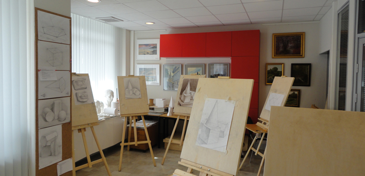
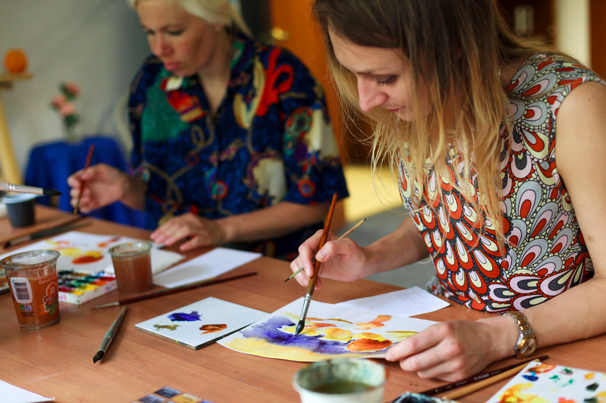

Главная цель студии сделать изобразительное искусство доступным для каждого. Не важно, сколько вам лет, есть у вас художественная подготовка, или вы впервые взяли в руки карандаш. Мы поможем вам почувствовать себя настоящим художником.

Вы научитесь свободно рисовать карандашом, углем, пастелью, раскроете для себя профессиональные тайны живописи маслом, акварелью и гуашью, и кроме того, откроете для себя тайны цвета, познакомитесь с различными видами декоративно-прикладного искусства.
В студии изобразительного искусства «Варвара» реализуются курсы, как в любительском, так и в профессиональном формате. Вы можете заниматься один раз в неделю для собственного удовольствия, или более интенсивно, чтобы в течение двух – трех лет приобрести серьёзные профессиональные навыки в избранном вами направлении изобразительного искусства. Гибкая система занятий в группах поможет подобрать самый подходящий именно для вас вариант.